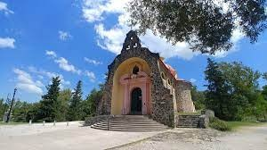
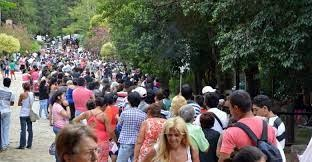

Santuario de la Virgen de Alta Gracia
El Santuario de la Virgen de Alta Gracia, también conocido como la Basílica de Nuestra Señora de la Merced, es un importante lugar de culto católico en Argentina. Está ubicado en la ciudad de Alta Gracia, en la provincia de Córdoba.
La basílica fue construida en el siglo XVII y ha sido un sitio de peregrinación durante siglos. La construcción presenta una arquitectura colonial española y alberga una imagen de la Virgen de la Merced, considerada patrona de la ciudad de Alta Gracia.
El Santuario de la Virgen de Alta Gracia es un lugar de peregrinación para creyentes y turistas por igual. Durante festividades religiosas y días especiales, se llevan a cabo celebraciones y procesiones en honor a la Virgen de la Merced.
Además de su relevancia religiosa, el santuario también tiene un significado cultural en la región. Es un sitio de interés histórico y arquitectónico, y muchos turistas visitan el lugar para aprender sobre la herencia religiosa y cultural de Argentina.
Visitas y Turismo
El santuario está abierto a los visitantes y turistas durante la mayoría del año. Los turistas pueden admirar la arquitectura, explorar el interior de la basílica y participar en las celebraciones religiosas si así lo desean. Además, el lugar ofrece una experiencia espiritual única para aquellos que buscan paz y reflexión.
Geolocalización
Si deseas visitar el Santuario de la Virgen de Alta Gracia, puedes encontrar nuestra ubicación exacta en el siguiente enlace de Google Maps.